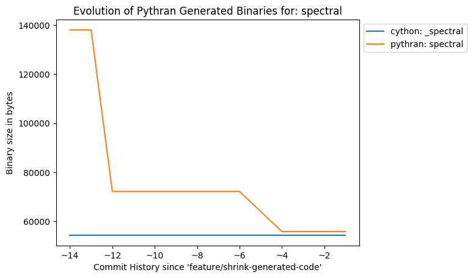

Testbed
So the question was: do Pythran-generated binaries use more disk space than Cython ones?
I first pick a few Cython files from the Scipy code base. Those are files that can easily be converted back to Python so that Pythran can process them (remember, Pythran only processes pure Python code).
- directed_hausdorff: [_hausdorff.pyx] [hausdorff.py]
- max_len_seq_inner: [max_len_seq_inner.pyx] [max_len_seq_inner.py]
- levinson, Solves a linear Toeplitz system using Levinson recursion: [_solve_toeplitz.pyx] [solve_toeplitz.py]
- lombscargle, Computes the Lomb-Scargle periodogram: [_spectral.pyx] [spectral.py]
To the notable exception of spectral.py that uses high level numpy.sum(x, axis=1) construct, the Pythran code is generally a rewrite of the Cython code with types and annotation pruned, plus a few syntactic sugar from Python like the for: ... else:.. statement used in hausdorff.py.
For reference, I compiled the Cython code using the rather old school cython src.pyx && gcc -shared -fPIC `python-config --cflags --libs` -o src.so -O2 command line, then stripped the resulting binary using strip src.so. The later command is used to be fair with Pythran, that automatically adds -Wl,-strip-all flag during compilation (both have the same effect of stripping the binary from debug information and useless ELF sections).
Commit History
The following figures illustrate the history of binary size throughout the recent Pythran commit history, using the Cython binary as a base line.



So a lot of things actually happened :-) Let me explain that.
Controlling Symbols
The first commit around HEAD~12 was the most relevant one. Digging through the output of nm -C on Pythran generated binaries, I noticed quite a lot of symbols that were of no use for the generated binaries; But they were present because Pythran uses the pythonic header only libraries and as such, when it includes some headers, the symbol defined end up in the binary. They are actually marked as hidden because of the -fvisibility=hidden flag, but they are still there (this flag mostly affects the linker). I ended up adding an (optional) anonymous namespace right below the pythonic namespace, which effectively marks all symbols as internal symbols, so the compiler can remove them relatively early in the compilation process.
There's also a small shrink around HEAD~9. This is due to some symbols that were just hanging around in the global namespace, but they happened to be useless :-)
Avoiding Copies
The stats for spectral.py were not so good, even after the initial reduction. While digging through the generated assembly code, I noticed a lot of register spill, ended up with a lot of mov. It turns out my expression template code was making a bunch of copies of its argument, which is sometimes necessary (when the expression template owns its argument) but sometimes not. Not a big deal as pythonic object use a shared reference counter, but still, avoiding that would certainly shrink the generated binaries. Turns out that was a correct guess. And it also speeds up the execution of the code, less spilling is generally a good thing :-)
About Specialization
It may looks strange to have all Pythran binaries thiner that Cython's, except spectral.so. This is explained by the fact that Pythran generates code to handle broadcasting, actually generating two versions for each complex expression: one with broadcasting and one without. Twice the code, twice the fat :-)
That gives me an optimization hint: being able to symbolically compute expression size may turn dynamic broadcasting into static broadcasting, I need to dig on that idea.
Going Further
Let's have a look to the two version of hausdorff binaries:
$ readelf -SW hausdorff.so _hausdorff.so File: hausdorff.so There are 28 section headers, starting at offset 0x17490: Section Headers: [Nr] Name Type Address Off Size ES Flg Lk Inf Al [ 0] NULL 0000000000000000 000000 000000 00 0 0 0 [ 1] .note.gnu.build-id NOTE 00000000000001c8 0001c8 000024 00 A 0 0 4 [ 2] .gnu.hash GNU_HASH 00000000000001f0 0001f0 00006c 00 A 3 0 8 [ 3] .dynsym DYNSYM 0000000000000260 000260 000618 18 A 4 1 8 [ 4] .dynstr STRTAB 0000000000000878 000878 000818 00 A 0 0 1 [ 5] .gnu.version VERSYM 0000000000001090 001090 000082 02 A 3 0 2 [ 6] .gnu.version_r VERNEED 0000000000001118 001118 0000a0 00 A 4 3 8 [ 7] .rela.dyn RELA 00000000000011b8 0011b8 000378 18 A 3 0 8 [ 8] .rela.plt RELA 0000000000001530 001530 000378 18 AI 3 23 8 [ 9] .init PROGBITS 00000000000018a8 0018a8 000017 00 AX 0 0 4 [10] .plt PROGBITS 00000000000018c0 0018c0 000260 10 AX 0 0 16 [11] .plt.got PROGBITS 0000000000001b20 001b20 000008 08 AX 0 0 8 [12] .text PROGBITS 0000000000001b30 001b30 004c78 00 AX 0 0 16 [13] .fini PROGBITS 00000000000067a8 0067a8 000009 00 AX 0 0 4 [14] .rodata PROGBITS 00000000000067c0 0067c0 000900 00 A 0 0 32 [15] .eh_frame_hdr PROGBITS 00000000000070c0 0070c0 0000e4 00 A 0 0 4 [16] .eh_frame PROGBITS 00000000000071a8 0071a8 000650 00 A 0 0 8 [17] .gcc_except_table PROGBITS 00000000000077f8 0077f8 0001d1 00 A 0 0 4 [18] .init_array INIT_ARRAY 0000000000207cf0 007cf0 000010 08 WA 0 0 8 [19] .fini_array FINI_ARRAY 0000000000207d00 007d00 000008 08 WA 0 0 8 [20] .data.rel.ro PROGBITS 0000000000207d08 007d08 000060 00 WA 0 0 8 [21] .dynamic DYNAMIC 0000000000207d68 007d68 000230 10 WA 4 0 8 [22] .got PROGBITS 0000000000207f98 007f98 000068 08 WA 0 0 8 [23] .got.plt PROGBITS 0000000000208000 008000 000140 08 WA 0 0 8 [24] .data PROGBITS 0000000000208140 008140 000088 00 WA 0 0 32 [25] .bss NOBITS 00000000002081e0 0081c8 002758 00 WA 0 0 32 [26] .comment PROGBITS 0000000000000000 0081c8 00001d 01 MS 0 0 1 [27] .shstrtab STRTAB 0000000000000000 0081e5 000100 00 0 0 1 (...) File: _hausdorff.so There are 26 section headers, starting at offset 0x2d6e8: Section Headers: [Nr] Name Type Address Off Size ES Flg Lk Inf Al [ 0] NULL 0000000000000000 000000 000000 00 0 0 0 [ 1] .note.gnu.build-id NOTE 00000000000001c8 0001c8 000024 00 A 0 0 4 [ 2] .gnu.hash GNU_HASH 00000000000001f0 0001f0 000040 00 A 3 0 8 [ 3] .dynsym DYNSYM 0000000000000230 000230 000f00 18 A 4 1 8 [ 4] .dynstr STRTAB 0000000000001130 001130 000aec 00 A 0 0 1 [ 5] .gnu.version VERSYM 0000000000001c1c 001c1c 000140 02 A 3 0 2 [ 6] .gnu.version_r VERNEED 0000000000001d60 001d60 000070 00 A 4 2 8 [ 7] .rela.dyn RELA 0000000000001dd0 001dd0 0026b8 18 A 3 0 8 [ 8] .rela.plt RELA 0000000000004488 004488 000a98 18 AI 3 21 8 [ 9] .init PROGBITS 0000000000004f20 004f20 000017 00 AX 0 0 4 [10] .plt PROGBITS 0000000000004f40 004f40 000720 10 AX 0 0 16 [11] .plt.got PROGBITS 0000000000005660 005660 000008 08 AX 0 0 8 [12] .text PROGBITS 0000000000005670 005670 01f753 00 AX 0 0 16 [13] .fini PROGBITS 0000000000024dc4 024dc4 000009 00 AX 0 0 4 [14] .rodata PROGBITS 0000000000024de0 024de0 002e48 00 A 0 0 32 [15] .eh_frame_hdr PROGBITS 0000000000027c28 027c28 000444 00 A 0 0 4 [16] .eh_frame PROGBITS 0000000000028070 028070 002508 00 A 0 0 8 [17] .init_array INIT_ARRAY 000000000022aca0 02aca0 000008 08 WA 0 0 8 [18] .fini_array FINI_ARRAY 000000000022aca8 02aca8 000008 08 WA 0 0 8 [19] .dynamic DYNAMIC 000000000022acb0 02acb0 000210 10 WA 4 0 8 [20] .got PROGBITS 000000000022aec0 02aec0 000140 08 WA 0 0 8 [21] .got.plt PROGBITS 000000000022b000 02b000 0003a0 08 WA 0 0 8 [22] .data PROGBITS 000000000022b3a0 02b3a0 002248 00 WA 0 0 32 [23] .bss NOBITS 000000000022d600 02d5e8 000768 00 WA 0 0 32 [24] .comment PROGBITS 0000000000000000 02d5e8 00001d 01 MS 0 0 1 [25] .shstrtab STRTAB 0000000000000000 02d605 0000e1 00 0 0 1
Special glasses help to read through these numbers, but basically:
- The .text section, i.e. where code lies, is larger on Cython-generated binary, by a factor of ~4 on that binary.
- The .plt and .plt.got sections, i.e. relocation informations are also larger. This is because Cython uses a lot of symbols fro the libpython while Pythran only uses some Python <> Native converters. This is confirmed by the number of dynamic symbols collected by `` nm -D _hausdorff.so | wc -l``: 159 in the case of Cython-generated binary and 64 for the Pythran version.
- The .rodata section also contains more information in Cython case. A quick look at its content with objdump -s -j.rodata _hausdorff.so outputs a lot of documentation, error message etc. Looks like Cython takes more care on error message than Pythran :-)
Note that some sections could be removed using strip -r: I suspect .note.gnu.build-id and .comment are not critical.
Conclusion
Pythran generates code that does not make any call to the Python C API. Cython does. Even when the user does its best to remove them for computation critical-parts, it's just not the same guarantee. This has an impact on code size.
But Cython is also more mature, so it's probable that some of its checks that make the code larger may find their way into Pythran generated code too.
Oh, and thanks to the reduction of number of copies, the expression template engine of Pythran got better. That's an unexpected but pleasant side-effect \o/